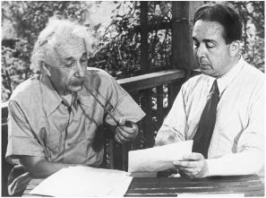

With Leó Szilárd reenacting (in 1946) their 1939 meeting
与西拉德再现1939年的会面，1946年
Leó Szilárd, a charming and slightly eccentric Hungarian physicist, was an old friend of Einstein’s. While living in Berlin in the 1920s, they had collaborated on the development of a new type of refrigerator, which they patented but were unable to market successfully.1 After Szilárd fled the Nazis, he made his way to England and then New York, where he worked at Columbia University on ways to create a nuclear chain reaction, an idea he had conceived while waiting at a stop-light in London a few years earlier. When he heard of the discovery of fission using uranium, Szilárd realized that element might be used to produce this potentially explosive chain reaction.
西拉德是匈牙利物理学家，颇有魅力，但稍显古怪。他是爱因斯坦的老朋友。20世纪20年代，他们曾在柏林共同设计过一种新型冰箱。虽然获得了专利，但销售并不是很好。 从纳粹的魔掌逃出之后，西拉德先是去了英国，然后来到纽约，在哥伦比亚大学研究如何产生核链式反应。几年前，他在伦敦等红灯时曾经设想过链式反应的思想。当他听说铀裂变的消息之后，他意识到可以用铀元素来实现这种具有潜在爆炸威力的链式反应。
Szilárd discussed this possibility with his close friend Eugene Wigner, another refugee physicist from Budapest, and they began to worry that the Germans might try to buy up the uranium supplies of the Congo, which was then a colony of Belgium. But how, they asked themselves, could two Hungarian refugees in America find a way to warn the Belgians? Then Szilárd recalled that Einstein happened to be friends with that country’s queen mother.
西拉德与好友维格纳（一位来自布达佩斯的流亡物理学家）讨论了这种可能性，他们担心德国人可能会从当时的比利时殖民地刚果将铀买断。但他们两个美国的匈牙利难民如何才能通知比利时人呢？接着西拉德想到，爱因斯坦刚巧是比利时王后的朋友。
Einstein was spending the summer of 1939 in a rented cottage on the north fork of eastern Long Island, across the Great Peconic Bay from the villages of the Hamptons. There he sailed his small boat Tinef, bought sandals from the local department store, and played Bach with the store’s owner.2
1939年夏天，爱因斯坦在长岛东部北支租了一栋别墅，与长岛南支汉普顿（Hamptons）的村镇跨匹克尼克湾（Great Peconic Bay）遥遥相望。在那里，他驾驶小艇“提奈夫”，在百货商店购买便鞋，和店主一起演奏巴赫。
“We knew that Einstein was somewhere on Long Island but we didn’t know precisely where,” Szilárd recalled. So he phoned Einstein’s Princeton office and was told he was renting the house of a Dr. Moore in the village of Peconic. On Sunday, July 16, 1939, they embarked on their mission with Wigner at the wheel (Szilárd, like Einstein, did not drive).
“我们知道爱因斯坦住在长岛的某个地方，但不知道确切位置。”西拉德回忆说。他给爱因斯坦在普林斯顿的办公室打电话，得知他此时正租住在匹克尼克（Peconic）村摩尔博士的房子。1939年7月16日，星期日，维格纳开车带西拉德开始了他们的使命（西拉德和爱因斯坦都不开车）。
But when they arrived they couldn’t find the house, and nobody seemed to know who Dr. Moore was. Just as they were ready to give up, Szilárd saw a young boy standing by the curb. “Do you, by any chance, know where Professor Einstein lives?” Like most people in town, even those who had no idea who Dr. Moore was, the boy did, and he led them up to a cottage near the end of Old Grove Road, where they found Einstein lost in thought.3
然而到达后，他们没有找到那所房子，而且似乎没有人知道摩尔博士是谁。正当他们准备放弃时，西拉德看见一个小男孩站在路边。“你知道爱因斯坦教授在哪儿住吗？”小男孩点了点头。对于镇上的大多数人来说，即使不知道摩尔博士是谁，也肯定知道爱因斯坦住在哪里。他带他们来到了老林路（Old Grove Road）尽头附近的一栋别墅，爱因斯坦正在那里沉思冥想。
Sitting at a bare wooden table on the screen porch of the sparsely furnished cottage, Szilárd explained the process of how an explosive chain reaction could be produced in uranium layered with graphite by the neutrons released from nuclear fission. “I never thought of that!” Einstein interjected. He asked a few questions, went over the process for fifteen minutes, and then quickly grasped the implications. Instead of writing to the queen mother, Einstein suggested, perhaps they should write to a Belgian minister he knew.
小别墅没有怎么布置，阳台上有一张木桌，上面没有放东西。西拉德坐在桌旁，向爱因斯坦解释了由核裂变释放出来的中子如何能够使铀石墨堆发生爆炸性的链式反应。“我从未想到这一点！”爱因斯坦插话说。他问了几个问题，对整个过程仔细考虑了15分钟，很快就领会了它的内涵。爱因斯坦建议，不用写信给王后，也许可以给他认识的一位比利时部长写信。
Wigner, showing some sensible propriety, suggested that perhaps three refugees should not be writing to a foreign government about secret security matters without consulting with the State Department. In which case, they decided, perhaps the proper channel was a letter from Einstein, the only one of them famous enough to be heeded, to the Belgian ambassador, with a cover letter to the State Department. With that tentative plan in mind, Einstein dictated a draft in German. Wigner translated it, gave it to his secretary to be typed, and then sent it to Szilárd.4
维格纳不无道理地指出，如果他们三个难民不与国务院商议，就给一个外国政府写信谈论秘密的安全事务，恐怕有所不妥。在这种情况下，也许恰当的做法是让爱因斯坦给比利时大使写一封信，再给国务院写一封附信，因为爱因斯坦是他们中间唯一可能受到重视的人。就这样，爱因斯坦用德语口述了一份草稿。维格纳对它做了翻译，交由秘书打印出来，然后交给了西拉德。
A few days later, a friend arranged for Szilárd to talk to Alexander Sachs, an economist at Lehman Brothers and a friend of President Roosevelt. Showing a bit more savvy than the three theoretical physicists, Sachs insisted that the letter should go right to the White House, and he offered to hand-deliver it.
几天以后，经过朋友的安排，西拉德见到了亚历山大·萨克斯。萨克斯是雷曼兄弟公司的经济学家，也是罗斯福总统的朋友。他比三位理论物理学家多了个心眼，坚持应当直接把这封信交到白宫，并提出亲自去交。
It was the first time Szilárd had met Sachs, but his bold plan was appealing. “It could not do any harm to try this way,” he wrote Einstein. Should they talk by phone or meet in person to revise the letter? Einstein replied that he should come back out to Peconic.
这虽然是西拉德与萨克斯的第一次会面，但其大胆的计划还是很吸引西拉德。“这样做不会有任何害处。”西拉德写信给爱因斯坦。要对这封信做出修改，他们应当电话交谈呢，还是亲自面谈？爱因斯坦回复说，他应当再来长岛。
By that point Wigner had gone to California for a visit. So Szilárd enlisted, as driver and scientific sidekick, another friend from the amazing group of Hungarian refugees who were theoretical physicists, Edward Teller.5 “I believe his advice is valuable, but also I think you might enjoy getting to know him,” Szilárd told Einstein. “He is particularly nice.”6 Another plus was that Teller had a big 1935 Plymouth. So once again, Szilárd headed out to Peconic.
那时维格纳已经去加利福尼亚访问了，所以西拉德又从匈牙利裔的理论物理学家难民中拉了朋友泰勒兼做司机和科学共犯。 “我相信他的建议很有价值，我想您也许会愿意认识他，”西拉德对爱因斯坦说，“他人非常好。” 另外一个好处是，泰勒开着一辆1935年制造的大普利茅斯汽车。就这样，西拉德又一次前往长岛。
Szilárd brought with him the original draft from two weeks earlier, but Einstein realized that they were now planning a letter that was far more momentous than one asking Belgian ministers to be careful about Congolese uranium exports. The world’s most famous scientist was about to tell the president of the United States that he should begin contemplating a weapon of almost unimaginable impact that could unleash the power of the atom.“Einstein dictated a letter in German,” Szilárd recalled, “which Teller took down, and I used this German text as a guide in preparing two drafts of a letter to the President.”7
西拉德带来了两周前写的原始草稿，但爱因斯坦意识到，这封信的意义远比让比利时的部长提防刚果的铀输出重要得多。这位世界上最著名的科学家正要告诉美国总统，他应当开始留意一种能够将能量从原子中释放出来的武器，其威力几乎无法想象。“爱因斯坦用德语口述了一封信，”西拉德回忆说，“泰勒负责记录，我依照这篇德语文本草拟了两封致总统的信。”
According to Teller’s notes, Einstein’s dictated draft not only raised the question of Congo’s uranium, but also explained the possibility of chain reactions, suggested that a new type of bomb could result, and urged the president to set up formal contact with physicists working on this topic. Szilárd then prepared and sent back to Einstein a 45-line version and a 25-line one, both dated August 2, 1939, “and left it up to Einstein to choose which he liked best.” Einstein signed them both in a small scrawl, rather than with the flourish he sometimes used.8
根据泰勒的记录，爱因斯坦口述的稿子不仅提出了刚果的铀问题，而且说明了链式反应的可能性，暗示一种新型的炸弹可能会被研制出来。他敦促总统与物理学家们进行正式接触，对这一问题进行研究。西拉德寄给爱因斯坦两封信，一封45行，一封25行，所署日期均为1939年8月2日，让爱因斯坦选出最喜欢的一封。爱因斯坦在两封信上都签了名，不过笔迹潦草，没有使用手写花体。
The longer version, which is the one that eventually reached Roosevelt, read in part:
最终送到罗斯福那里的是那封较长的信，以下是它的部分内容：
Sir:
阁下：
Some recent work by E. Fermi and L. Szilárd, which has been communicated to me in a manuscript, leads me to expect that the element uranium may be turned into a new and important source of energy in the immediate future. Certain aspects of this situation which has arisen seem to call for watchfulness and, if necessary, quick action on the part of the Administration. I believe therefore that it is my duty to bring to your attention the following facts and recommendations:
我从费米和西拉德的手稿里，知道了他们最近的工作，使我预感在不久的将来，铀元素可能会变成一种重要的新能源。这一情况的某些方面似乎需要加以密切注意，如有必要，政府方面还应迅速采取行动。因此，我认为我有责任请您注意以下情况和建议：
. . . It may become possible to set up a nuclear chain reaction in a large mass of uranium, by which vast amounts of power and large quantities of new radium-like elements would be generated. Now it appears almost certain that this could be achieved in the immediate future.
……在大量的铀中建立起原子核的链式反应会成为可能，由此会产生大量的能量和大量像镭一样的新元素。现在看来，几乎可以肯定，这件事在不久的将来就能做到。
This new phenomena would also lead to the construction of bombs, and it is conceivable—though much less certain—that extremely powerful bombs of a new type may thus be constructed. A single bomb of this type, carried by boat and exploded in a port, might very well destroy the whole port together with some of the surrounding territory . . .
这种新现象也可用来制造炸弹，并且能够设想——尽管还很不确定——由此可以制造出极有威力的新型炸弹来。只要一颗这种类型的炸弹，用船运出去，并且使之在港口爆炸，很可能就会把整个港口连同它周围的一些区域一起毁掉……
In view of this situation you may think it desirable to have some permanent contact maintained between the administration and the group of physicists working on chain reactions in America.
鉴于这种情况，您也许会认为，让政府与那批在美国从事链式反应工作的物理学家经常进行接触是可取的。
It ended with a warning that German scientists might be pursuing a bomb. Once the letter had been written and signed, they still had to figure out who could best get it into the hands of President Roosevelt. Einstein was unsure about Sachs. They considered, instead, financier Bernard Baruch and MIT President Karl Compton.
信的最后警告说，德国科学家可能正在研制一种炸弹。虽然信已写好，也签了名，但谁最适合将它送到罗斯福总统手中呢？爱因斯坦对萨克斯不太有把握。他们当时考虑的是财政家伯纳德·巴鲁克和麻省理工学院院长卡尔·康普顿。
More amazingly, when Szilárd sent back the typed version of the letter, he suggested that they use as their intermediary Charles Lindbergh, whose solo transatlantic flight twelve years earlier had made him a celebrity. All three of the refugee Jews were apparently unaware that the aviator had been spending time in Germany, was decorated the year before by the Nazi Hermann Göring with that nation’s medal of honor, and was becoming an isolationist and Roosevelt antagonist.
更让人吃惊的是，西拉德在寄回信件打字稿时，建议让查尔斯·林白当中间人。年前，林白曾独自驾驶飞机横越大西洋，并因此而一举成名。显然，这三名犹太难民都不知道，这位飞行员在德国住了多年，前一年还被纳粹头子戈林授予了国家荣誉勋章，正在成为一名孤立主义者和罗斯福的对手。
Einstein had briefly met Lindbergh a few years earlier in New York, so he wrote a note of introduction, which he included when he returned the signed letters to Szilárd. “I would like to ask you to do me a favor of receiving my friend Dr. Szilárd and think very carefully about what he will tell you,” Einstein wrote to Lindbergh. “To one who is outside of science the matter he will bring up may seem fantastic. However, you will certainly become convinced that a possibility is presented here which has to be very carefully watched in the public interest.”9
几年前，爱因斯坦曾在纽约与林白有过一面之缘，所以他在把签名信寄给西拉德时还附了一张介绍信。“我想请你见一下我的朋友西拉德博士，认真考虑考虑他的话，”爱因斯坦写信给林白，“在科学领域之外的人听来，他要说的事也许显得有些离奇，但你一定会认识到有这样一种可能性，必须为了公共利益而密切注意。”
Lindbergh did not respond, so Szilárd wrote him a reminder letter on September 13, again asking for a meeting. Two days later, they realized how clueless they had been when Lindbergh gave a nationwide radio address. It was a clarion call for isolationism. “The destiny of this country does not call for our involvement in European wars,” Lindbergh began. Interwoven were hints of Lindbergh’s pro-German sympathies and even some anti-Semitic implications about Jewish ownership of the media. “We must ask who owns and influences the newspaper, the news picture, and the radio station,” he said. “If our people know the truth, our country is not likely to enter the war.”10
林白没有回应，于是西拉德9月13日又给他写了一封信进行提醒，再次请求见面。两天后，林白做了一次全国性的广播讲话，这时他们才意识到自己是多么愚蠢。林白在讲话中对孤立主义表示明确支持。“这个国家的命运并不要求我们卷入欧洲战争。”林白说。他不仅同情和支持德国，甚至还就犹太人拥有媒体发表了一些反犹言论。“我们必须追问谁拥有和影响着新闻报纸、新闻图片和广播电台，”他说，“假如我们的人民掌握了真相，我们的国家就不大可能参战。”
Szilárd’s next letter to Einstein stated the obvious: “Lindbergh is not our man.”11
西拉德在给爱因斯坦的下一封信中明确写道：“林白不是我们的人。”
Their other hope was Alexander Sachs, who had been given the formal letter to Roosevelt that Einstein signed. Even though it was obviously of enormous importance, Sachs was not able to find the opportunity to deliver it for almost two months.
他们现在把希望寄托在萨克斯身上，他已经拿到了正式的交给罗斯福的爱因斯坦签名信。虽然这封信极为重要，但萨克斯几乎有两个月都没能找到递交的机会。
By then, events had turned what was an important letter into an urgent one. At the end of August 1939, the Nazis and Soviets stunned the world by signing their war alliance pact and proceeded to carve up Poland. That prompted Britain and France to declare war, starting the century’s second World War. For the time being, America stayed neutral, or at least did not declare war. The country did, however, begin to rearm and to develop whatever new weapons might be necessary for its future involvement.
随着形势的发展，这封重要信件已经变得愈发紧急。1939年8月底，纳粹与苏联签订战争联盟条约，进而瓜分了波兰，举世为之震惊。英法不得不向其宣战，第二次世界大战由此爆发。美国暂时还保持中立，至少是没有宣战。然而，美国的确开始重整军备，研发一切必要的新武器，以备未来之需。
Szilárd went to see Sachs in late September and was horrified to discover that he still had not been able to schedule an appointment with Roosevelt. “There is a distinct possibility Sachs will be of no use to us,” Szilárd wrote Einstein. “Wigner and I have decided to accord him ten days grace.”12 Sachs barely made the deadline. On the afternoon of Wednesday, October 11, he was ushered into the Oval Office carrying Einstein’s letter, Szilárd’s memo, and an eight-hundred-word summary he had written on his own.
9月底，西拉德拜访萨克斯时，惊恐地发现他仍然未能与罗斯福约好见面时间。“萨克斯很有可能帮不了我们什么忙，”西拉德写信给爱因斯坦，“维格纳和我决定再给他十天时间。” 萨克斯勉强赶上了最后期限。10月11日，星期三下午，他被领进椭圆形办公室，手里拿着爱因斯坦的信、西拉德的备忘录以及他本人写的一份800字的概要。
The president greeted him jovially. “Alex, what are you up to?” Sachs could be loquacious, which may be why the president’s handlers made it hard for him to get an appointment, and he tended to tell the president parables. This time it was a tale about an inventor who told Napoleon that he would build him a new type of ship that could travel using steam rather than sails. Napoleon dismissed him as crazy. Sachs then revealed that the visitor was Robert Fulton and, so went the lesson, the emperor should have listened.13
总统对他表示欢迎：“萨克斯，有什么事吗？” 萨克斯可能比较健谈（这也许就是为什么总统副手很难为他约时间的原因），他往往会跟总统讲寓言。这次是关于一个发明家的故事。这位发明家告诉拿破仑，他要为其建造一种新型轮船，可以不用帆而用蒸汽。拿破仑觉得他疯了。萨克斯接着说，那位发明家就是罗伯特·富尔顿，这就是教训，皇帝本该听他的话。
Roosevelt responded by scribbling a note to an aide, who hurried off and soon returned with a bottle of very old and rare Napoleon brandy that Roosevelt said had been in his family for a while. He poured two glasses.
罗斯福听后给一位副官写了张便条，副官急匆匆地离开了，没过多久拿回了一瓶很有年头的拿破仑白兰地。罗斯福说这瓶酒暂时存放在他家。随后，他倒了两杯酒。
Sachs worried that if he left the memos and papers with Roosevelt, they might be glanced at and then pushed aside. The only reliable way to deliver them, he decided, was to read them aloud. Standing in front of the president’s desk, he read his summation of Einstein’s letter, parts of Szilárd’s memo, and some other paragraphs from assorted historical documents.
萨克斯担心，如果他把备忘录和信留给罗斯福，很可能随便扫一眼就被搁在一边。他觉得唯一可靠的办法就是将它们大声读出来，于是便站在总统办公桌前，将他对爱因斯坦信件的总结、西拉德备忘录的部分内容以及从各种历史文件中挑选的内容统统读了一遍。
“Alex, what you are after is to see that the Nazis don’t blow us up,” the president said.
“萨克斯，你是希望纳粹不会把我们炸掉。”总统说。
“Precisely,” Sachs replied.
“完全正确。”萨克斯回答。
Roosevelt called in his personal assistant. “This requires action,” he declared.14
罗斯福打电话给私人助理。“我们需要行动。”他宣布。
That evening, plans were drawn up for an ad hoc committee, coordinated by Dr. Lyman Briggs, director of the Bureau of Standards, the nation’s physics laboratory. It met informally for the first time in Washington on October 21. Einstein was not there, nor did he want to be. He was neither a nuclear physicist nor someone who enjoyed proximity to political or military leaders. But his Hungarian émigré trio—Szilárd, Wigner, and Teller—were there to launch the effort.
当天晚上成立了一个由国家物理实验室度量衡局局长莱曼·布里格斯负责协调的专门委员会，还制订了计划。1939年10月21日，它在华盛顿举行了第一次非正式会议。爱因斯坦没有出席，也不想出席。他既不是核物理学家，也不喜欢亲近政治或军事领导人。但三位匈牙利难民西拉德、维格纳和泰勒出席了会议。
The following week, Einstein received a polite and formal thank-you letter from the president. “I have convened a board,” Roosevelt wrote, “to thoroughly investigate the possibilities of your suggestion regarding the element of uranium.”15
过了一周，爱因斯坦收到了总统写来的一封感谢信，信写得礼貌而正式。“我已经召集了一个委员会来认真研究您关于铀元素的建议是否可行。”罗斯福写道。
Work on the atomic project proceeded slowly. Over the next few months, the Roosevelt administration approved only $6,000 for graphite and uranium experiments. Szilárd became impatient. He was becoming more convinced of the feasibility of chain reaction and more worried about reports he was getting from fellow refugees on the activity in Germany.
原子弹工程进展缓慢。在接下来的几个月里，罗斯福政府只批准了6000美元来进行石墨和铀实验。西拉德开始有些沉不住气了。他愈发相信链式反应是可行的，难民同胞们关于德国活动的报道使他更加忧虑。
So in March 1940, he went to Princeton to see Einstein again. They composed another letter for Einstein to sign, which was addressed to Alexander Sachs but intended for him to convey to the president. It warned of all the work on uranium they heard was being done in Berlin. Given the progress being made in producing chain reactions with huge explosive potential, the letter urged the president to consider whether the American work was proceeding quickly enough.16
于是1940年3月，他再次到普林斯顿拜访了爱因斯坦。他们又写了一封信让爱因斯坦签名，虽然名义上是写给萨克斯，但实际上却打算交给总统。信里警告说，他们听说柏林正在从事各种关于铀的研究。鉴于用链式反应产生巨大爆炸性的研究正在取得突破，这封信敦促总统调查美国的工作是否进展得足够快。
Roosevelt reacted by calling for a conference designed to spur greater urgency, and he told officials to make sure that Einstein could attend. But Einstein had no desire to be more involved. He replied by saying he had a cold—somewhat of a convenient excuse—and did not need to be at the meeting. But he did urge the group to get moving: “I am convinced of the wisdom and urgency of creating the conditions under which work can be carried out with greater speed and on a larger scale.”17
罗斯福召集了一个会议，旨在更为紧迫地推进工作，并要求确保爱因斯坦能够参加。但爱因斯坦不愿更多地介入，他回复说自己患了感冒——一个方便的托词——不能出席会议。不过，他的确敦促这个团队要加紧努力。“这项工作要在一定条件下才能以更快的速度和更大的规模进行，我对创造这些条件的明智和紧迫性深信不疑。”
Even if Einstein had wanted to take part in the meetings, which led to the Manhattan Project that developed the atom bomb, he may not have been welcome. Amazingly, the man who had helped get the project launched was considered, by some, to be too great a potential security risk to be permitted to know about the work.
即使爱因斯坦愿意参加这次会议，从而促成研制原子弹的曼哈顿计划，他也可能会不受欢迎。令人惊讶的是，帮助启动该计划的爱因斯坦竟被一些人认为潜在的安全危险巨大，因此不能了解这项工作。
Brigadier General Sherman Miles, the acting Army chief of staff who was organizing the new committee, sent a letter in July 1940 to J. Edgar Hoover, who had already been the director of the FBI for sixteen years and would remain so for another thirty-two. By addressing him by his national guard rank as “Colonel Hoover,” the general was subtly pulling rank when it came to controlling intelligence decisions. But Hoover was assertive when Miles asked for a summary of information the Bureau had on Einstein.18
1940年7月，准将谢尔曼·迈尔斯，即正在组织这个新委员会的代理陆军参谋长，给已经当了16年联邦调查局局长的胡佛（他还要再当32年）写了一封信。在审查情报决策时，迈尔斯暗中以势压人，按照胡佛的国民警卫队军衔称呼他为“胡佛上校”。然而，当迈尔斯索取联邦调查局关于爱因斯坦的信息概要时，胡佛显得信心十足。
Hoover began by providing General Miles with the letter from Mrs. Frothingham’s Woman Patriot Corporation, which had argued in 1932 that Einstein should be denied a visa and raised alarms about various pacifist and political groups he had supported.19 The Bureau made no attempt to verify or assess any of the charges.
胡佛先是向迈尔斯将军提供了1932年弗罗辛厄姆夫人的妇女爱国者团体写的16页的信，呼吁不要给爱因斯坦发放签证，并对他曾经支持过的各种和平主义组织和政治团体发出警告。 不过当时联邦调查局并未对其中任何一条指控进行证实或评估。
Hoover went on to say that Einstein had been involved in the World Antiwar Congress in Amsterdam in 1932, which had some European communists on its committee. This was the conference that Einstein, as noted earlier, had specifically and publicly declined to attend or even support; as he wrote the organizer, “Because of the glorification of Soviet Russia it includes, I cannot bring myself to sign it.” Einstein had gone on in that letter to denounce Russia, where “there seems to be complete suppression of the individual and of freedom of speech.” Nevertheless, Hoover implied that Einstein had supported the conference and was thus pro-Soviet.20
胡佛接着说，爱因斯坦还参加过1932年在阿姆斯特丹召开的世界反战大会，它的委员会中有一些欧洲的共产主义分子。前面说过，爱因斯坦公开拒绝参加这次大会，甚至明确表示不支持；正如他在给会议组织者的信中所说：“由于它包含着对苏维埃俄国的颂扬，我不能在上面签字。”在那封信中，爱因斯坦还公开指责了苏联，说那里“渴望权力的个人运用着最卑劣的手段”“似乎存在着对个人和言论自由的彻底压制”。然而，胡佛暗示爱因斯坦支持过这次大会，因此是亲苏的。
Hoover’s letter had six more paragraphs making similar allegations about a variety of alleged Einstein associations, ranging from pacifist groups to those supporting Spain’s loyalists. Appended was a biographical sketch filled with trivial misinformation (“has one child”) and wild allegations. It called him “an extreme radical,” which he certainly was not, and said he “has contributed to communist magazines,” which he hadn’t. General Miles was so taken aback by the memo that he wrote a note in the margin, warning, “There is some possibility of flameback” if it ever leaked.21
胡佛的信里还有六段话对各种自称的爱因斯坦团体做了类似指控，从和平主义协会到支持西班牙共和派的组织，不一而足。同时附上的还有一个充斥着误传（“有一个孩子”）和主观臆测的小传，称他“极端激进”，并曾“服务于共产主义杂志”。当然，这些都是诬陷。迈尔斯将军着实对这份备忘录大吃一惊，以至于写了一个旁注警告说：“倘若泄露，有可能引火烧身。”
The conclusion of the unsigned biographical sketch was stark: “In view of this radical background, this office would not recommend the employment of Dr. Einstein on matters of a secret nature, without a very careful investigation, as it seems unlikely that a man of his background could, in such a short time, become a loyal American citizen.” In a memo the following year, it was reported that the Navy had assented to giving Einstein a security clearance, but “the Army could not clear.”22
这篇未署名的小传得出了极端的结论。“鉴于这种激进的背景，在没有做认真研究的情况下，我们不推荐雇用爱因斯坦博士从事秘密性的工作，因为具有他这样背景的人似乎不大可能在如此短的时间内变成一个忠诚的美国公民。”第二年的一份备忘录则称，海军已经同意给予爱因斯坦安全特许，但“陆军尚不能给他特许”。
Just as the Army’s decision was being made, Einstein was in fact eagerly doing something the likes of which he had not done for forty years, ever since he had saved up his money so that he could become a Swiss citizen after leaving Germany. He was voluntarily and proudly becoming a citizen of the United States, a process that had begun five years earlier when he sailed to Bermuda so that he could return on an immigration visa. He still had his Swiss citizenship and passport, so he did not need to do this. But he wanted to.
当陆军做决定时，爱因斯坦正热心忙于一件事情。自从他攒钱使自己可以在离开德国后成为瑞士公民，他已经有40年没做过类似的事情了。此时，他正自愿加入美国国籍，将要自豪地成为一个美国公民。事实上，五年前他驶往百慕大时，这一过程就开始了，这样他便可以拿着移民签证归来。他仍然拥有瑞士国籍和护照，所以这样做不是必需的。但他仍然想这样做。
He took his citizenship test on June 22, 1940, in front of a federal judge in Trenton. To celebrate the process, he agreed to give a radio interview as part of the immigration service’s I Am an American series. The judge served lunch and had the radio folks set up in his chambers to make the process easier for Einstein.23
1940年6月22日，他在特伦顿的联邦法院接受了公民资格审查。为此，他答应做一次广播访谈，作为移民规划署主办的《我是美国人》系列节目的一部分。鉴定人管了午饭，在他的议事厅招待了电台人员，以使爱因斯坦心里更放松。
It was an inspiring day, partly because Einstein showed just what type of free-speaking citizen he would be. In his radio talk, he argued that, to prevent wars in the future, nations would have to give up some of their sovereignty to an armed international federation of nations. “A worldwide organization cannot insure peace effectively unless it has control over the entire military power of its members,” he said.24
这一天令人振奋，部分是因为爱因斯坦显示了他是怎样的一个言论自由者。他在广播中主张，为了防止未来发生战争，世界各国必须把一部分主权交给一个武装起来的国际性的国家联盟。“如果一个世界组织无法控制其成员国的所有军力，就无法有效地确保和平。”他说。
Einstein passed his test and he was sworn in—along with his step-daughter Margot, his assistant Helen Dukas, and eighty-six other new citizens—on October 1. Afterward, he praised America to the reporters covering his naturalization. The nation, he said, would prove that democracy is not just a form of government but “a way of life tied to a great tradition, the tradition of moral strength.” Asked if he would renounce other loyalties, he joyously declared that he “would even renounce my cherished sailboat” if that were necessary.25 It was not, however, necessary for him to renounce his Swiss citizenship, and he did not.
爱因斯坦通过了审查。1940年10月1日，他和他的继女玛戈特、助手杜卡斯以及另外86位新公民做了宣誓。此后，他向负责报道其入籍的记者们赞扬了美国。他说，这个国家将证明，民主不仅是一种政府形式，而且也是“一种与道德力量的伟大传统相联系的生活方式”。在被问及是否会放弃其他忠诚时，他笑着说，如果必要，他“甚至会放弃我心爱的帆船”。 不过，他没有必要放弃瑞士国籍，也没有这样做。
When he first arrived in Princeton, Einstein had been impressed that America was, or could be, a land free of the rigid class hierarchies and servility in Europe. But what grew to impress him more—and what made him fundamentally such a good American but also a controversial one—was the country’s tolerance of free thought, free speech, and nonconformist beliefs. That had been a touchstone of his science, and now it was a touchstone of his citizenship.
爱因斯坦刚到普林斯顿时的印象是，与欧洲不同，美国或可成为一个没有奴役和严格阶级等级的国家。但渐渐地，他更深的印象来自这个国家对思想自由、言论自由和离经叛道的宽容（这使他不仅是一个优秀的美国人，而且也是一个颇受争议的美国人）。这曾经是他的科学的检验标准，现在也是其公民身份的检验标准。
He had forsaken Nazi Germany with the public pronouncement that he would not live in a country where people were denied the freedom to hold and express their own thoughts. “At that time, I did not understand how right I was in my choice of America as such a place,” he wrote in an unpublished essay just after becoming a citizen. “On every side I hear men and women expressing their opinion on candidates for office and the issues of the day without fear of consequences.”
他已经抛弃了纳粹德国，并且公开声明，如果人民坚持和表达自己思想的自由得不到保证，他绝不会生活在这样一个国家。“到那时就会知道，我选择美国作为这样一个地方是多么正确，”他在成为美国公民后在一篇未发表的文章中写道，“我经常听说，无论男人还是女人，都在表达着自己关于政府候选人和当前问题的看法，而不必担心有什么后果。”
The beauty of America, he said, was that this tolerance of each person’s ideas existed without the “brute force and fear” that had arisen in Europe. “From what I have seen of Americans, I think that life would not be worth living to them without this freedom of self expression.”26 The depth of his appreciation for America’s core value would help explain Einstein’s cold public anger and dissent when, during the McCarthy era a few years later, the nation lapsed into a period marked by the intimidation of those with unpopular views.
他说，美国的好处在于这种对每个人思想的宽容，而没有像欧洲那样出现“暴力和恐惧”。“根据我对美国人的所见所闻，我认为如果没有这种自我表达的自由，生活对他们来说就是不值得过的。” 几年以后，美国进入麦卡锡时代，那些持非主流观点的人开始受到胁迫。爱因斯坦对美国核心价值的欣赏有助于解释他那时为什么会公开表达愤怒和不满。
More than two years after Einstein and his colleagues had urged attention to the possibility of building atomic weapons, the United States launched the supersecret Manhattan Project. It happened on December 6, 1941, which turned out to be, fittingly enough, the day before Japan launched its attack on Pearl Harbor that brought the nation into the war.
1941年12月6日，在爱因斯坦及其同事提请注意研制原子武器的可能性之后两年多，美国启动了超级保密的曼哈顿计划。这恰好是日本偷袭珍珠港的前一天，那次事件终于将美国拖入了战争。
Because so many fellow physicists, such as Wigner, Szilárd, Oppenheimer, and Teller, had disappeared to obscure towns, Einstein was able to surmise that the bomb-making work he had recommended was now proceeding with greater urgency. But he was not asked to join the Manhattan Project, nor was he officially told about it.
由于像维格纳、西拉德、奥本海默和泰勒等众多物理学家都消失在了偏僻的小镇，爱因斯坦能够猜到，他所推荐的研制原子弹的工作正在更加紧张地进行着。但他没有被邀请加入曼哈顿计划，也没有被正式告知这件事。
There were many reasons he was not secretly summoned to places like Los Alamos or Oak Ridge. He was not a nuclear physicist or a practicing expert in the scientific issues at hand. He was, as noted, considered by some a security risk. And even though he had put aside his pacifist sentiments, he never expressed any desire or made any requests to enlist in the endeavor.
他之所以没有被秘密召到像洛斯阿拉莫斯或橡树岭这样的地方，有许多原因。他既非核物理学家，在当前科学问题的实践方面也不是行家里手。正如上文所说，他被一些人当成了安全威胁。虽然他已经放弃和平主义观点，但他从未表达过任何愿望或提出任何要求来积极参与这项事业。
He was, however, offered a bit part that December. Vannevar Bush, the director of the Office of Scientific Research and Development, which oversaw the Manhattan Project, contacted Einstein through the man who had succeeded Flexner as the head of the Institute for Advanced Study in Princeton, Frank Aydelotte, and asked for his help on a problem involving the separation of isotopes that shared chemical traits. Einstein was happy to comply. Drawing on his old expertise in osmosis and diffusion, he worked on a process of gaseous diffusion in which uranium was converted into a gas and forced through filters. To preserve secrecy, he was not even allowed to have Helen Dukas or anyone else type up his work, so he sent it back in his careful handwriting.
不过，那年12月，有人给他安排了一点工作。通过接替弗莱克斯纳担任普林斯顿高等研究院院长的弗兰克·艾德洛特，监管曼哈顿计划的科研发展处主任万尼瓦尔·布什联系上了爱因斯坦，请他就一个涉及同位素分离的问题提供帮助。爱因斯坦欣然答应。运用其旧有的渗透和扩散方面的专门知识，他提出了一种气体扩散过程，在这一过程中，铀变成了一种气体，并通过了滤器。为了保密，他甚至不能让杜卡斯或别人帮他打字，于是只得亲自写信并寄出。
“Einstein was very much interested in your problem, has worked on it for a couple of days and produced the solution, which I enclose,” Aydelotte wrote Bush. “Einstein asks me to say that if there are other angles of the problem that you want him to develop or if you wish any parts of this amplified, you need only let him know and he will do anything in his power. I very much hope that you will make use of him in any way that occurs to you, because I know how deep is his satisfaction at doing anything which might be useful in the national effort.” As an afterthought, Aydelotte added, “I hope you can read his handwriting.”27
“爱因斯坦对您的问题非常感兴趣，他对此已经研究数日，给出的解答我装在了信封里，”艾德洛特写信给布什，“爱因斯坦托我转告，如果您还希望他从其他角度对这个问题进行研究，或是对它的某个部分做进一步阐述，您只需告诉他一声，他一定尽力而为。我非常希望您能够尽可能充分地利用他，因为我知道，如果他做的事情能够有利于国家，他会感到多么满足。”艾德洛特还特意补充了一句：“我希望您能够读懂他的笔迹。”
The scientists who received Einstein’s paper were impressed, and they discussed it with Vannevar Bush. But in order for Einstein to be more useful, they said, he should be given more information about how the isotope separation fit in with other parts of the bomb-making challenge.
科学家们收到爱因斯坦的论文后很是感佩，他们与布什进行了讨论。为了让爱因斯坦发挥更大的价值，他们说，应当告诉他关于同位素分离与研制原子弹的其他工作如何联系的更多信息。
Bush refused. He knew that Einstein would have trouble getting a security clearance. “I do not feel that I ought to take him into confidence on the subject to the extent of showing just where this thing fits into the defense picture,” Bush wrote Aydelotte. “I wish very much that I could place the whole thing before him and take him fully into confidence, but this is utterly impossible in view of the attitude of people here in Washington who have studied his whole history.”28
布什拒绝了。他知道爱因斯坦很难获得安全特许。“在这件事情上，我并不认为应当对他足够信任，以至于要告诉他这件事情如何服务于我们的国防，”布什写信给艾德洛特，“我很希望能够告诉他所有情况，完全信任他，但是鉴于华盛顿研究过他的整个经历的人的态度，这是绝对不可能的。”
Later, during the war, Einstein helped with less secret matters. A Navy lieutenant came to visit him at the Institute to enlist him in analyzing ordnance capabilities. He was enthusiastic. As Aydelotte noted, he had felt neglected since his brief flurry of work on uranium isotopes. Among the issues Einstein explored, as part of a $25-per-day consulting arrangement, were ways to shape the placement of sea mines in Japanese harbors, and his friend the physicist George Gamow got to come pick his brain on a variety of topics. “I am in the Navy, but not required to get a Navy haircut,” Einstein joked to colleagues, who probably had trouble picturing him with a crew cut.29
后来在战争期间，爱因斯坦在一些机密性不高的事情上提供了帮助。有一位海军上尉来研究院拜访他，请他参与分析军火性能。他热情地答应了。正如艾德洛特所说，自从忙完铀同位素的短期工作以后，爱因斯坦觉得自己不再受到重视。在担任每天报酬为25美元的顾问期间，他研究了各种问题，其中包括在日本港口排布海洋水雷的方法。他的物理学家朋友伽莫夫赶来请教他各种问题，据他回忆，爱因斯坦对同事们开玩笑说：“我供职于海军，却没有被要求剪一个海军头。”也许他们想不出如果爱因斯坦留一个板刷头是什么样子。
Einstein also helped the war effort by donating a manuscript of his special relativity paper to be auctioned off for a War Bond drive. It was not the original version; he had thrown that away back when it was published in 1905, not knowing it would ever be worth millions. To re-create the manuscript, he had Helen Dukas read the paper to him aloud as he copied down the words. “Did I really say it that way?” he griped at one point. When Dukas assured him that he had, Einstein lamented, “I could have put it much more simply.” When he heard that the manuscript, along with one other, had sold for $11.5 million, he declared that “economists will have to revise their theories of value.”30
为了助战，爱因斯坦还在一次募集战时公债的活动中拍卖了他的狭义相对论手稿。不过，这并不是原始版本，原稿1905年发表之后就扔掉了，他不知道这些东西有朝一日竟会价值百万。为此，他让杜卡斯把论文朗读出来，他再抄下来。“我真这么说吗？”他有一次抱怨说。杜卡斯告诉他确实如此。他悲叹道：“我本可以说得更简洁的。”当他听说这份手稿以及另一份手稿总共拍出了1150万美元时，他笑称：“经济学家得修改他们的价值理论了”
The physicist Otto Stern, who had been one of Einstein’s friends since their days together in Prague, had been secretly working on the Manhattan Project, mainly in Chicago, and had a good sense by the end of 1944 that it would be successful. That December, he made a visit to Princeton. What Einstein heard upset him. Whether or not the bomb was used in the war, it would change the nature of both war and peace forever. The policymakers weren’t thinking about that, he and Stern agreed, and they must be encouraged to do so before it was too late.
早在布拉格时，物理学家奥托·斯特恩就是爱因斯坦的朋友。他一直在秘密参与曼哈顿计划，主要在芝加哥，到了1944年年底，他已经确信曼哈顿计划会取得成功。那年12月，斯特恩访问了普林斯顿。爱因斯坦听说的消息令他沮丧：无论原子弹是否被用于战争，战争与和平的性质将永远被改变。他和斯特恩都认为，决策者并未考虑这些，必须尽快敦促他们这样做。
So Einstein decided to write to Niels Bohr. They had sparred over quantum mechanics, but Einstein trusted his judgment on more earthly issues. Einstein was one of the few people to know that Bohr, who was half Jewish, was secretly in the United States. When the Nazis overran Denmark, he had made a daring escape by sailing with his son in a small boat to Sweden. From there he had been flown to Britain, given a fake passport with the name Nicholas Baker, then sent to America to join the Manhattan Project at Los Alamos.
于是，爱因斯坦决定给玻尔写信。虽然他们曾经就量子力学进行过争论，但爱因斯坦相信玻尔在更为世俗的事情上的判断。爱因斯坦是极少数知道玻尔（一半血统是犹太人）正秘密待在美国的人之一。纳粹侵占丹麦时，玻尔和儿子乘一只小艇冒险逃到了瑞士，并从那里飞到英国，以“约翰·贝克”（John Baker）的名字伪造了一个护照，然后来到美国参加在洛斯阿拉莫斯的曼哈顿计划。
Einstein wrote to Bohr, using his real name, in care of Denmark’s embassy in Washington, and somehow the letter got to him. In it Einstein described his worrisome talk with Stern about the dearth of thinking about how to control atomic weapons in the future. “The politicians do not appreciate the possibilities and consequently do not know the extent of the menace,” Einstein wrote. Once again, he made his argument that it would take an empowered world government to prevent an arms race once the age of atomic weaponry arrived. “Scientists who know how to get a hearing with political leaders,” Einstein urged, “should bring pressure on the political leaders in their countries in order to bring about an internationalization of military power.”31
爱因斯坦写信给玻尔（用的是玻尔真名），请华盛顿的丹麦大使馆转交，这封信辗转到了玻尔手中。在信中，爱因斯坦讲了他与斯特恩的谈话，对政府如何在未来控制原子武器方面缺乏思考深感不安。“政客们并不了解这些可能性，因此不知道威胁的严重性。”爱因斯坦写道。他再次主张，一旦原子武器时代降临，需要由一个经过授权的世界政府来防止军备竞赛。爱因斯坦敦促：“有机会向政治领袖进言的科学家们应当联名给他们国家的政治领导人以压力，以使武装力量国际化。”
Thus began what would be the political mission that would dominate the remaining decade of Einstein’s life. Since his days as a teenager in Germany, he had been repulsed by nationalism, and he had long argued that the best way to prevent wars was to create a world authority that had the right to resolve disputes and the military power to impose its resolutions. Now, with the impending advent of a weapon so awesome that it could transform both war and peace, Einstein viewed this approach as no longer an ideal but a necessity.
即将主宰爱因斯坦最后十年的政治使命就这样开始了。自从他还是一个十几岁的德国少年时，他就憎恶国家主义。他一直主张，防止战争的最好办法就是建立一个世界权力机构来解决争端，它拥有武装力量来强制执行决议。现在，随着一种能够改变战争与和平性质的可怕武器的迫近，爱因斯坦不再视这种途径为一种理想，而是一种必需。
Bohr was unnerved by Einstein’s letter, but not for the reason Einstein would have hoped. The Dane shared his desire for the internationalization of atomic weaponry, and he had advocated that approach in meetings with Churchill, and then with Roosevelt, earlier in the year. But instead of persuading them, he had prompted the two leaders to issue a joint order to their intelligence agencies saying that “enquiries should be made regarding the activities of Professor Bohr and steps taken to ensure that he is responsible for no leakage of information, particularly to the Russians.”32
看罢爱因斯坦的信，玻尔非常紧张，这倒不是出于爱因斯坦希望看到的原因。和爱因斯坦一样，这个丹麦人也希望原子武器国际化。在之前与丘吉尔和罗斯福分别会面时，玻尔都提出过这种主张，但非但没有说服他们，反而导致两位领导人命令其情报部门“应当调查玻尔教授的活动，并采取措施确保他不会泄露信息，特别是泄露给俄国人”。
So upon receiving Einstein’s letter, Bohr hurried to Princeton. He wanted to protect his friend by warning him to be circumspect, and he also hoped to repair his own reputation by reporting to government officials on what Einstein said.
玻尔一收到爱因斯坦的信就赶往普林斯顿。他想保护他的朋友，警告他要小心谨慎，还希望向政府官员通报爱因斯坦的话，以修补他本人的名誉。
During their private talk at the Mercer Street house, Bohr told Einstein that there would be “the most deplorable consequences” if anyone who knew about the development of the bomb shared that information. Responsible statesmen in Washington and London, Bohr assured him, were aware of the threat caused by the bomb as well as “the unique opportunity for furthering a harmonious relationship between nations.”
这次私人谈话在梅瑟街的寓所进行。玻尔对爱因斯坦说，如果了解原子弹研制的人知道了这一消息，将会导致“最糟糕的后果”。玻尔向他保证，华盛顿和伦敦负责任的政治家知道原子弹所造成的威胁，明白这是一次“推进国家之间和谐关系的独一无二的机会”。
Einstein was persuaded. He promised that he would refrain from sharing any information he had surmised and would urge his friends not do anything to complicate American or British foreign policy. And he immediately set out to make good on his word by writing a letter to Stern that was, for Einstein, remarkable in its circumspection. “I have the impression that one must strive seriously to be responsible, that one does best not to speak about the matter for the time being, and that it would in no way help, at the present moment, to bring it to public notice,” he said. He was careful not to reveal anything, even that he had met with Bohr. “It is difficult for me to speak in such a nebulous way, but for the moment I cannot do anything else.”33
爱因斯坦被说服了。他保证自己不会再传播他曾经猜测的任何信息，并将敦促他的朋友们不再使美国或英国的外交政策复杂化。为了履行诺言，他立即给斯特恩写了一封信。对于爱因斯坦来说，这种小心细致是罕见的。“我感到，我们必须力争负起责任，暂时不去谈论这件事，在目前这个时候，让它引起公众的注意不会有任何帮助。”他说。他小心翼翼地不去透露任何东西，甚至是他与玻尔的会面。“对我来说，以这样一种模糊的方式说话很困难，但目前我只能这样做。”
Einstein’s only intervention before the end of the war was prompted again by Szilárd, who came to visit in March 1945 and expressed anxiety about how the bomb might be used. It was clear that Germany, now weeks away from defeat, was not making a bomb. So why should the Americans rush to complete one? And shouldn’t policymakers think twice about using it against Japan when it might not be needed to secure victory?
爱因斯坦在战争结束以前的唯一一次介入仍然是被西拉德鼓动的。1945年3月，西拉德来访时对如何使用原子弹表示了担忧。现在很清楚，距离投降只有几个星期的德国并未研制原子弹。那么，美国人为什么还要迫不及待地制造它呢？倘若不用原子弹就能保证胜利，为什么还要用它来攻击日本？决策者们难道不应三思而后行吗？
Einstein agreed to write another letter to President Roosevelt urging him to meet with Szilárd and other concerned scientists, but he went out of his way to feign ignorance. “I do not know the substance of the considerations and recommendations which Dr. Szilárd proposes to submit to you,” Einstein wrote. “The terms of secrecy under which Dr. Szilárd is working at present do not permit him to give me information about his work; however, I understand that he now is greatly concerned about the lack of adequate contact between scientists who are doing this work and those members of your Cabinet who are responsible for formulating policy.”34
爱因斯坦答应再给罗斯福总统写一封信，敦促他同西拉德以及关心此事的科学家会面，他自己则假装不知情。“我不知道西拉德博士打算向您提交的需考虑的问题和建议的内容，”爱因斯坦写道，“西拉德博士正在保密条件下工作，保密条款不容许他向我告知他工作的信息。不过我听说，他现在极为担心从事这项工作的科学家与您的内阁中负责制定政策的成员之间缺乏充分的接触。”
Roosevelt never read the letter. It was found in his office after he died on April 12 and was passed on to Harry Truman, who in turn gave it to his designated secretary of state, James Byrnes. The result was a meeting between Szilárd and Byrnes in South Carolina, but Byrnes was neither moved nor impressed.
罗斯福没有读到这封信。他4月12日去世后，这封信在他办公室被发现，并被交予杜鲁门总统。杜鲁门又把它交给了即将上任的国务卿詹姆斯·伯恩斯。最终，西拉德在南卡罗来纳面见了伯恩斯，但伯恩斯不为所动。
The atom bomb was dropped, with little high-level debate, on August 6, 1945, on the city of Hiroshima. Einstein was at the cottage he rented that summer on Saranac Lake in the Adirondacks, taking an afternoon nap. Helen Dukas informed him when he came down for tea. “Oh, my God,” is all he said.35
1945年8月6日，几乎没有经过什么高层的争论，原子弹就被投到了广岛。那天下午，爱因斯坦正在他租住的阿迪朗达克山萨拉纳克湖的别墅小憩。他下楼喝茶时杜卡斯告诉了他这个消息。“哦，我的上帝！”这是他得知消息后唯一的话。
Three days later, the bomb was used again, this time on Nagasaki. The following day, officials in Washington released a long history, compiled by Princeton physics professor Henry DeWolf Smyth, of the secret endeavor to build the weapon. The Smyth report, much to Einstein’s lasting discomfort, assigned great historic weight for the launch of the project to the 1939 letter he had written to Roosevelt.
三天后，另一颗原子弹被投到了长崎。第二天，华盛顿的官员发布了由普林斯顿物理学教授亨利·德沃尔夫·史密斯撰写的关于研制秘密武器的长篇报告。史密斯报告将曼哈顿计划的实施在很大程度上归因于爱因斯坦1939年给罗斯福写的信，这让爱因斯坦一直感到不安。
Between the influence imputed to that letter and the underlying relationship between energy and mass that he had formulated forty years earlier, Einstein became associated in the popular imagination with the making of the atom bomb, even though his involvement was marginal. Time put him on its cover, with a portrait showing a mushroom cloud erupting behind him with E=mc2 emblazoned on it. In a story that was overseen by an editor named Whittaker Chambers, the magazine noted with its typical prose flair from the period:
在常人的想象中，爱因斯坦与原子弹的研制脱离不了干系，即使这种参与是边缘的。他们不仅把这归咎于那封信的影响，而且还与他40年前提出的质能关系挂起了钩。他成了《时代》周刊的封面人物，在封面图片上，一朵蘑菇云正在他后方升起，上面饰以“E=MC2”的标记。杂志刊出了一篇以当时典型的散文风格写成的报道（编辑为惠特克·钱伯斯）：
Through the incomparable blast and flame that will follow, there will be dimly discernible, to those who are interested in cause & effect in history, the features of a shy, almost saintly, childlike little man with the soft brown eyes, the drooping facial lines of a world-weary hound, and hair like an aurora borealis . . . Albert Einstein did not work directly on the atom bomb. But Einstein was the father of the bomb in two important ways: 1) it was his initiative which started U.S. bomb research; 2) it was his equation (E = mc2) which made the atomic bomb theoretically possible.36
透过随之而起的剧烈爆炸和熊熊火焰，那些对历史因缘有兴趣的人隐隐看到了一个身材不高的男人。他性格腼腆，天真单纯，有如圣徒一般，褐色的眼睛里闪着柔和的光，脸上低垂的皱纹让人想起一只厌倦了尘世的猎狗，头发有如北极光……阿尔伯特·爱因斯坦并未直接参与研制原子弹。但在两个重要的意义上，爱因斯坦是原子弹之父：① 正是他的倡议启动了美国的原子弹研究；② 正是他的方程（E=mc2）使得原子弹在理论上成为可能。
It was a perception that plagued him. When Newsweek did a cover on him, with the headline “The Man Who Started It All,” Einstein offered a memorable lament. “Had I known that the Germans would not succeed in producing an atomic bomb,” he said, “I never would have lifted a finger.”37
这种看法令他十分痛苦。《新闻周刊》以“始作俑者”为大标题做了一期他的封面，爱因斯坦看后发出了一声令人难忘的悲叹。“要是我知道德国人不能成功研制出原子弹，”他说，“我一点力都不会出。”
Of course, neither he nor Szilárd nor any of their friends involved with the bomb-building effort, many of them refugees from Hitler’s horrors, could know that the brilliant scientists they had left behind in Berlin, such as Heisenberg, would fail to unlock the secrets. “Perhaps I can be forgiven,” Einstein said a few months before his death in a conversation with Linus Pauling, “because we all felt that there was a high probability that the Germans were working on this problem and they might succeed and use the atomic bomb and become the master race.”38
当然，他和西拉德以及任何参与研制原子弹的朋友（其中许多人都是从希特勒的恐怖中逃出来的难民）都不可能知道，海森伯等留在柏林的卓越科学家无法破解秘密。“或许我可以得到宽恕，”爱因斯坦去世前几个月同莱纳斯·鲍林谈话时说，“因为我们都觉得德国人很可能正在研究这个问题，并且会取得成功，他们会使用原子弹，成为优等民族。”